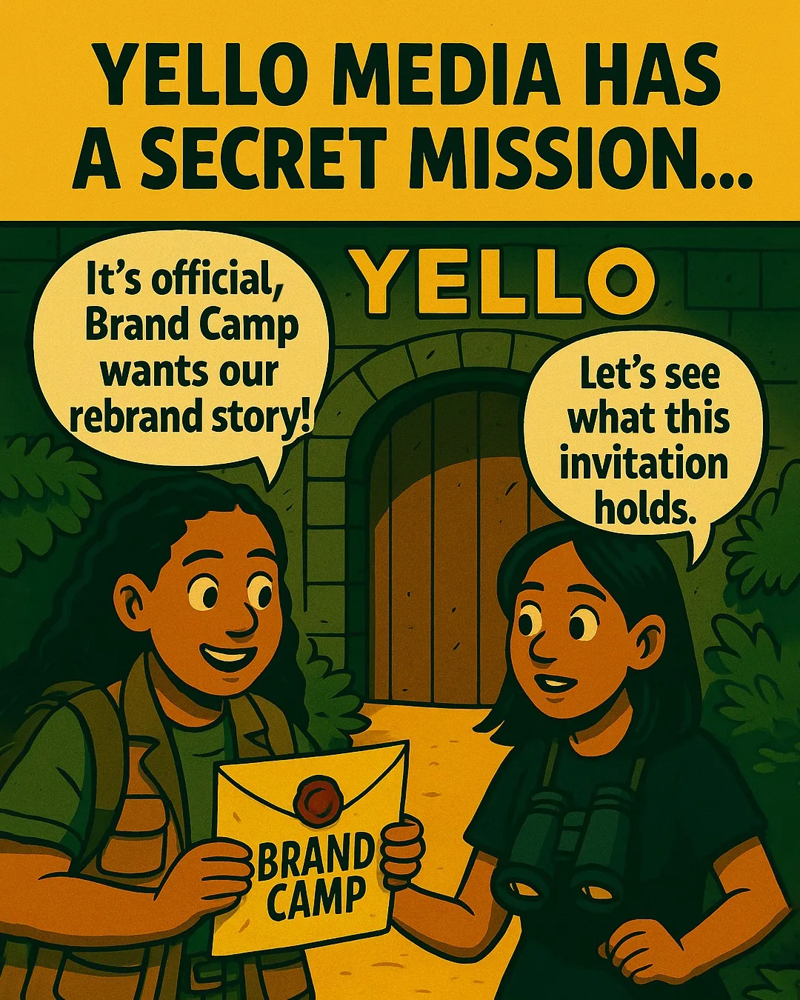
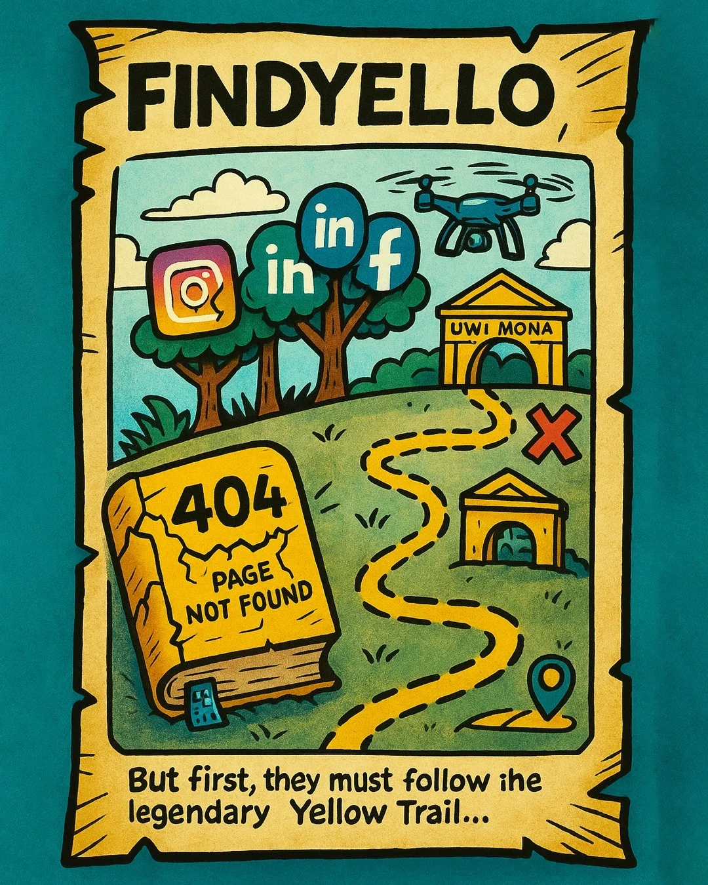
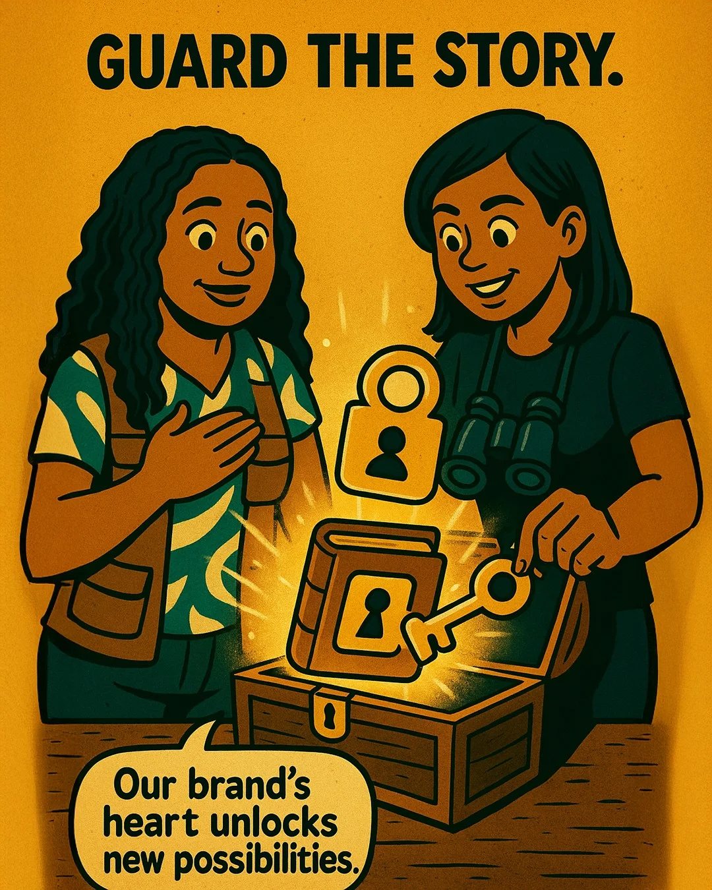
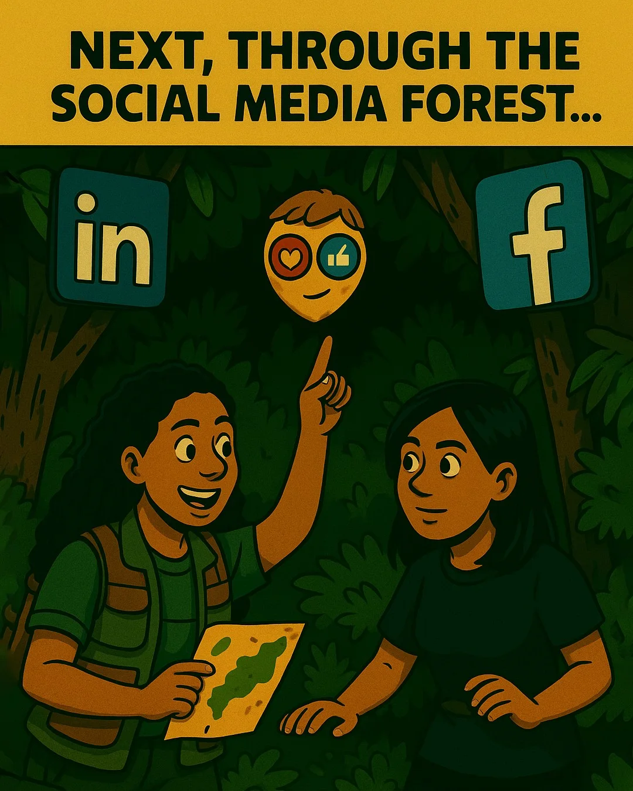

Carousel
01 / The secret mission
The opening invitation introduces Yello’s rebrand story through a comic-style adventure.
Open original post (opens in a new tab)Campaign Strategy / Campaign
Campaign strategy and creative direction
An invitation, a trail, a brand story and an event-day reveal. The published comic sequence carries the same characters and visual language from one chapter to the next.

The opening invitation introduces Yello’s rebrand story through a comic-style adventure.
Open original post (opens in a new tab)
An illustrated map connects Yello’s legacy with local discovery and the journey to Brand Camp.
Open original post (opens in a new tab)
The next chapter uses a key and treasure chest to connect the brand’s history with new possibilities.
Open original post (opens in a new tab)
The event-day post follows the characters through a social-media forest and announces Yello’s Brand Camp presentation.
Open original post (opens in a new tab)Published by Yello Media Group, 5–7 May 2025. Select an image to open its original carousel on Instagram; Instagram may ask you to sign in.
Led campaign strategy and rollout, bringing promotional video, designer collaboration and AI-assisted comic-style storytelling together.
Bring Yello’s rebrand story into the Brand Camp event conversation through a consistent campaign across formats.
Give the event a consistent story across formats while supporting the speaker and sponsor presence.
Campaign planning, creative direction, video production and rollout coordination.
Campaign planning, promotional video, designer collaboration and a comic-style social sequence leading into the event.
Promotional videos and published social storytelling supporting Yello’s Brand Camp 2025 presence.
The published May 5–7 carousel sequence shows the campaign’s comic-style storytelling. The May 8 recap reel and Yello’s event coverage provide the event context. These links demonstrate delivered work, without claiming attendance or campaign performance.
Completed campaign work.
What would the next campaign build on or test differently?